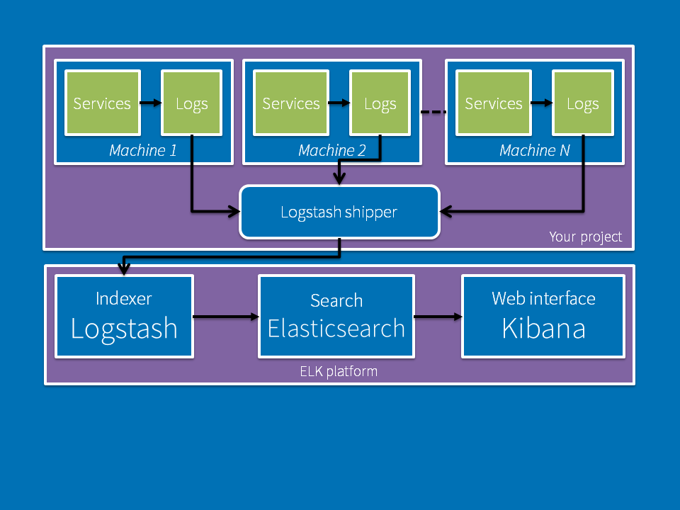

- Elasticsearch
- Logstash
- Kibana
Analyze, Search,
Visualize
your data!
Data constantly flows into your systems, but it can quickly grow to be fat !
As your data set grows larger, your analytics will slow up, resulting in sluggish insights.
- How can you maintain valuable business insights?
- Use ELK !
- Centralize your logs
- Parse and gather only the fields you need
- Visualize your logs and identify the information quickly
- Logstash : Processes incoming logs
- Elasticsearch : Stores all of the logs
- Kibana : Web interface for searching and visualizing logs
Docker ELK
- You can use my stack on Docker, all you need is just to set up your Logstash configurations !
- Docker ELK repository
- Follow the tutorial (in French)
- Enjoy !
With my Docker ELK, locally...
...or with a more advanced solution

...in your new projects to format your logs correctly.
...set up this solution while you build your app.
- A small tip I can give you is to add an ID in your app which, for example, helps you follow a request through different services.
-
- In Kibana, you'll be able to see all the logs related to that request